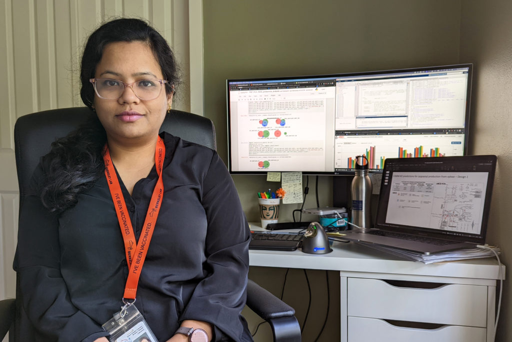
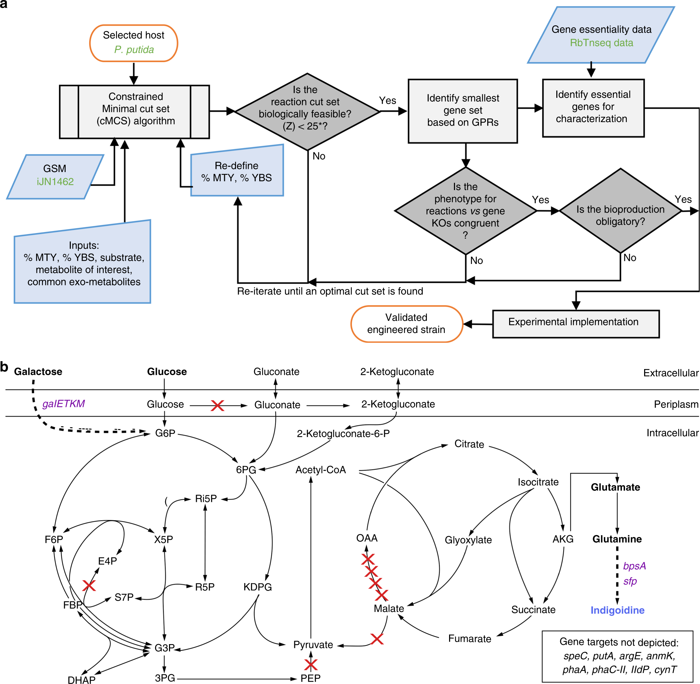

Model
Genome-Scale Metabolic Modeling
Applying constraint-based modeling, flux balance analysis, minimal cut sets, and elementary mode analysis to guide metabolic engineering decisions.

Computational Biology | Systems & Metabolic Engineering
Engineering biology through models, data & experiments.
I build computational and experimental strategies to understand, engineer, and optimize biological systems—translating genome-scale models, multi-omics, and bioinformatics into experimentally testable designs and actionable insight.
Seattle, WA · Open to Scientist, Research Scientist & Computational Biology roles
Currently exploring
I am interested in Scientist, Research Scientist, Computational Biologist, Systems Biology, and Metabolic Engineering opportunities in Seattle / Greater Seattle, hybrid, on-site, or remote settings.
The most compelling work connects quantitative modeling, reproducible data workflows, and experimental biology to practical decisions in biotechnology, therapeutics, sustainability, and translational life science.
Professional Focus
My work connects computational modeling to microbial engineering and biological interpretation. I develop bioinformatics pipelines, integrate reproducible Jupyter-based analysis workflows, and translate genome-scale metabolic models into experimentally validated strategies for biofuels and bioproducts. M- Group
What I Bring
Model
Applying constraint-based modeling, flux balance analysis, minimal cut sets, and elementary mode analysis to guide metabolic engineering decisions.
Engineer
Turning model-guided designs into engineered strains, pathway changes, physiological validation, and bioprocess-relevant learning.
Analyze
Designing reproducible computational workflows for multi-omics and NGS-derived datasets with Jupyter, Python, MATLAB, and GitHub.
Translate
Connecting predictions and data to strain construction, cultivation, production metrics, and biological interpretation.
Flagship Experience · 2021–2026
At Berkeley Lab, I worked at the interface of computational modeling, microbial engineering, and experimental physiology—using genome-scale models and multi-omics data to design and evaluate engineered microbial systems.

Experience
Developed a scalable systems biology workflow to predict and validate growth-coupled production strategies for biofuels and bioproducts, including experimentally successful indigoidine production strategies in Pseudomonas putida KT2440.
Applied next-generation resequencing, constraint-based modeling, and molecular biology to study Chromobacterium violaceum, identifying redox-homeostasis mechanisms and candidate metabolites that re-sensitize resistant populations.
Built a broad experimental foundation through projects in red blood cell stabilization, mammalian cell culture, cloning, protein expression, PCR, genotyping, biochemical assays, and freeze-drying workflows.
Teaching & Mentoring
Featured Research
Project 01
Combined systems biology workflows with experimental validation to identify and test growth-coupled production strategies for biofuels and bioproducts.
Model → Design → Engineer → Measure
Project 02

Applied genome-scale modeling and metabolic engineering to improve titers, rates, and yields of a non-native product at scale.
Read publicationProject 03
Used genome-scale and pathway engineering in Pseudomonas putida to advance a sustainable aviation fuel precursor.
Read publicationResearch Impact
Google Scholar h-index of 16 · Co-inventor on two translational innovation filings.
2026 · Article
Trends in Biotechnology.
2025 · Article
npj Systems Biology and Applications 11, 8.
2025 · Patent Application
Co-inventor on genetically modified Pseudomonas host cells and methods useful for producing isoprenol.
2024 · Article
Metabolic Engineering 82, 157-170.
2023 · Patent
Co-inventor on genetically modified bacterial cells and methods useful for producing indigoidine.
2020 · Article
Nature Communications 11, 5385.
Media Coverage
2023
Berkeley Lab News Center feature on model-guided strain engineering for faster, more sustainable biomanufacturing.
Read article2022
Berkeley Lab Biosciences profile on computational biology, modeling, and sustainable bioproduct research.
Read profile2018
The Hindu BusinessLine coverage connected to public awareness of antibiotic use.
Read articleScientific Community
Reviewer for Journals
Contribute to scientific quality and rigor through manuscript review in computational biology, metabolic engineering, systems biology, and biotechnology.
Volunteering
Breadth of Training
Metabolic engineering, metabolic modeling, strain physiology, and bioprocess data.
Cancer research, mammalian cell culture, molecular biology, protein expression, and biochemical assays.
NGS-derived datasets, multi-omics, bioinformatics, and reproducible computational modeling.
Computational Biology × AI
An emerging direction: applying modern computational and AI-enabled approaches to make biological analysis, prediction, and scientific workflows more effective—without overstating a developing specialization.
How I Work
Connect computational predictions with strain construction, cultivation data, production metrics, and biological interpretation.
Work comfortably with computational scientists, molecular biologists, bioprocess teams, interns, collaborators, and public outreach groups.
Turn complex modeling, multi-omics, and experimental results into practical stories for publications, mentoring, peer review, and stakeholder discussions.
Use documentation, version control, structured notebooks, and reusable workflows so analyses can be checked, shared, and extended.
Guide students and trainees through computational modeling, biotechnology concepts, workflow handoff, and confidence-building scientific practice.
Contribute through journal review, application review, scientific outreach, JBEI tours, iGEM volunteering, and public science engagement.
Contact
Let’s build better biology with models, data, and experiments. Based in Seattle, WA and open to Scientist, Research Scientist, and Computational Biology roles, as well as research collaborations.